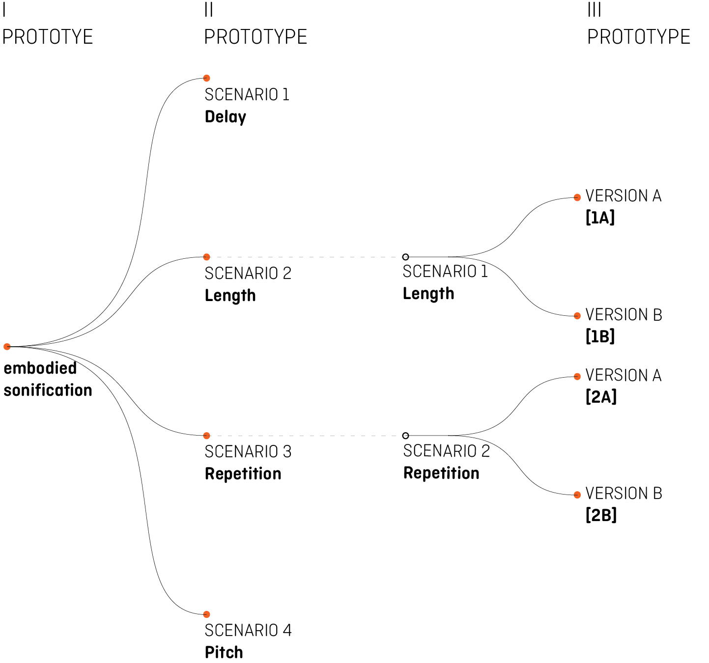

This website is a repository of sounds described in the master thesis:
Sonificazione dei dati e sicurezza informatica nelle reti di distribuzione idrica.
Il caso C-Town
Il caso C-Town
Data used in this project refears to a study case developed for the international competition:
Taormina, R. and Galelli, S., Deep-Learning Approach to the Detection and Localization of Cyber-Physical Attacks on Water Distribution Systems. Journal of Water Resources Planning and Management, 144(10), p.04018065, 2018 - Github repository reference
Taormina, R. and Galelli, S., Deep-Learning Approach to the Detection and Localization of Cyber-Physical Attacks on Water Distribution Systems. Journal of Water Resources Planning and Management, 144(10), p.04018065, 2018 - Github repository reference
The Project is based on three different Prototypes which correspond to three subsequent iterations of the sonification design.
The following diagram illustrate the work process.

The following diagram illustrate the work process.